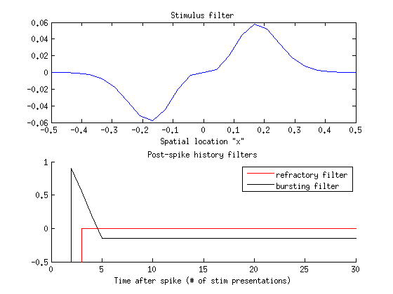
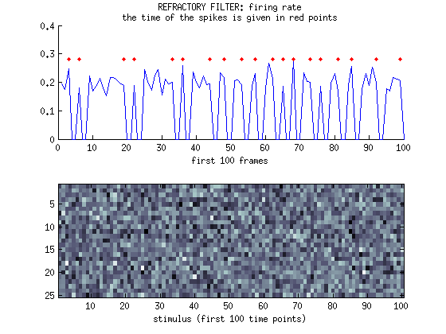
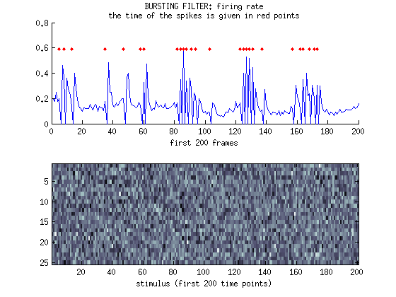
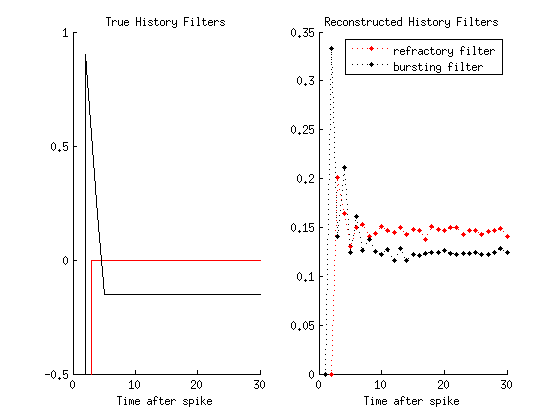
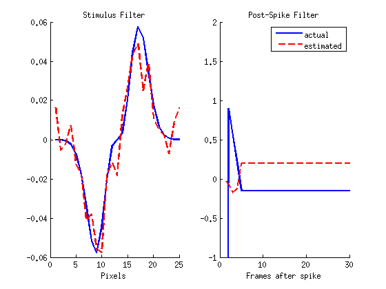

Contents
clear; close all; clc;
Generate white noise stimulus:
p = 25; % spatial dimensions T = 1e5; % number of time points x = linspace(-0.5,0.5,p); % spatial axis s = randn(p,T);
Define stimulus filter (k) and post-spike history filters (h)
alpha = 50; b = 0.02; k = alpha*(x.^3) .* exp(-x.^2/b); h1 = [zeros(1,28), ones(1,2).*-100]; % absolute refractory h2 = [-ones(1,26).*0.15, linspace(0.2,0.9,3), ones(1,1).*-100]; % leads to bursting figure; subplot(2,1,1) plot(x,k) title('Stimulus filter') xlabel('Spatial location "x"') subplot(2,1,2); hold on plot(fliplr(h1),'-r') plot(fliplr(h2),'-k') title('Post-spike history filters') xlabel('Time after spike (# of stim presentations)') legend('refractory filter','bursting filter') ylim([-0.5 1])
Compute the firing rate for h1
% Assume silent cell before input: pad spk with zeros at the front. spk1 = [zeros(length(h1),1); nan(T,1)]; r0 = 0.2; r = nan(T,1); for i_t = 1:T r(i_t) = exp(k*s(:,i_t) + h1*spk1(i_t:(i_t+length(h1)-1)) + log(r0)); spk1(i_t+length(h1)) = rand < r(i_t); end % Delete the padded zeros at the front of spk (spk should now have T % elements). spk1_aligned = spk1((length(h1)+1):end); figure; subplot(2,1,1); hold on plot(r(1:100)) plot(find(spk1_aligned(1:100)==1),max(r(1:100)),'.r') title({'REFRACTORY FILTER: firing rate',... 'the time of the spikes is given in red points'}) xlabel('first 100 frames') subplot(2,1,2) imagesc(s(:,1:100)) colormap bone xlabel('stimulus (first 100 time points)')
Compute the firing rate for h2
% Assume silent cell before input: pad spk with zeros at the front. spk2 = [zeros(length(h2),1); nan(T,1)]; r0 = 0.2; r = nan(T,1); for i_t = 1:T r(i_t) = exp(k*s(:,i_t) + h2*spk2(i_t:(i_t+length(h2)-1)) + log(r0)); spk2(i_t+length(h2)) = rand < r(i_t); end % Delete the padded zeros at the front of spk (spk should now have T % elements). spk2_aligned = spk2((length(h2)+1):end); figure; subplot(2,1,1); hold on plot(r(1:200)) plot(find(spk2_aligned(1:200)==1),max(r(1:200)),'.r') title({'BURSTING FILTER: firing rate',... 'the time of the spikes is given in red points'}) xlabel('first 200 frames') subplot(2,1,2) imagesc(s(:,1:200)) colormap bone xlabel('stimulus (first 200 time points)')
Compute the average spike-history STA
Note - this will not always work. If the stimulus filter is very strong, the temporal history filter will be washed out.
sta1 = zeros(length(h1),1); spk1_ind = find(spk1); for aa = 1:length(spk1_ind) sta1 = sta1+spk1(spk1_ind(aa)-length(h1):spk1_ind(aa)-1); end sta1 = sta1./sum(spk1); sta2 = zeros(length(h2),1); spk2_ind = find(spk2); for aa = 1:length(spk2_ind) sta2 = sta2+spk2(spk2_ind(aa)-length(h2):spk2_ind(aa)-1); end sta2 = sta2./sum(spk2); figure; subplot(1,2,1); hold on plot(fliplr(h1),'-r') plot(fliplr(h2),'-k') title('True History Filters') xlabel('Time after spike') ylim([-0.5 1]) subplot(1,2,2); hold on plot(fliplr(sta1'),':.r') plot(fliplr(sta2'),':.k') title('Reconstructed History Filters') xlabel('Time after spike') legend('refractory filter','bursting filter')
Fit a GLM
You need to jump through some hoops to get this to work. You need to decrease the number of parameters in the post-spike filter for the optimization to work properly and avoid overfitting. I only allow the function to specify the first 5 elements of the post-spike filter. The remaining 25 were set to the value of the last element.
ns = 25; nh = 30; % Function A, inputs: % "a" is a ns+nh+1 element row vector, holding the parameters of the glm. % The first ns elements are the stimulus filter. The last element is % the baseline firing rate. The elements in the middle define the % history filter. % "S" is a vector holding a single stimulus (column vector, ns elements) % "R" is a vector holding a the history (column vector, nh elements) % % Function A, output: The log of the estimated firing rate for a given % stimulus and history filter. A = @(a,S,R)log(a(1)) + a(2:(ns+1))*S + ... [a((ns+2):end), repmat(a(end),1,nh+ns+1-length(a))]*R; % Function L, inputs: % "a" row vector holding params, same as in function A (see above). % "spk_train" vector of spikes (e.g. "spk2_aligned") % "s" is a matrix holding all the white noise stimuli (dims: ns-by-T) % "R" is a matrix holding all the spike histories (dims: nh-by-T) % % Function L, output: The negative log-liklihood of the spike train given % the GLM parameters in the vector "a" L = @(a, spk_train, s, R) -sum(spk_train.*(A(a,s,R))) + sum(exp(A(a,s,R))); % Construct the matrix R: R = zeros(nh,T); for rr = 2:T if rr < nh R(1:rr,rr) = spk2_aligned(1:rr); else R(:,rr) = spk2_aligned((rr-nh+1):rr); end end % Function L_wrapper: % % --> We want to minimize the log-liklihood function "L" by manipulating % the parameters of the GLM model (given in the argument "a"). We don't % want to optimize any of the other inputs to L, since they are data we % are trying to fit. Thus we need a wrapper function, so Matlab knows % which parameters it is optimizing. L_wrapper = @(a)L(a,spk2_aligned',s,R); aguess = [0.2 ones(1,ns+5).*0.01]; % initial guess %options = optimoptions('fminunc','MaxFunEvals',1e4); [aopt,fval] = fminunc(L_wrapper,aguess); k_est = aopt(2:ns+1); h_est = aopt((ns+2):end); h_est = [h_est, repmat(h_est(end),1,nh+ns+1-length(aopt))]; figure; subplot(1,2,1); hold on plot(k,'-b','LineWidth',2) plot(k_est,'--r','LineWidth',2) title('Stimulus Filter') xlabel('Pixels') subplot(1,2,2); hold on title('Post-Spike Filter') plot(fliplr(h2),'-b','LineWidth',2) plot(h_est,'--r','LineWidth',2) ylim([-1 2]) xlabel('Frames after spike') legend('actual','estimated')
Warning: Gradient must be provided for trust-region algorithm; using line-search algorithm instead. Local minimum found. Optimization completed because the size of the gradient is less than the default value of the function tolerance.